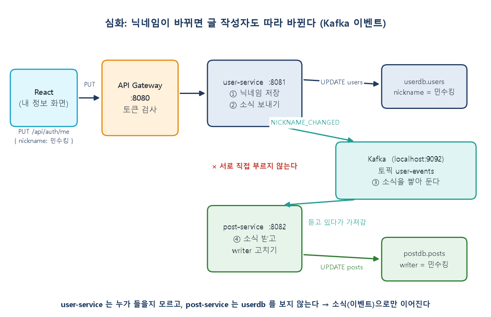
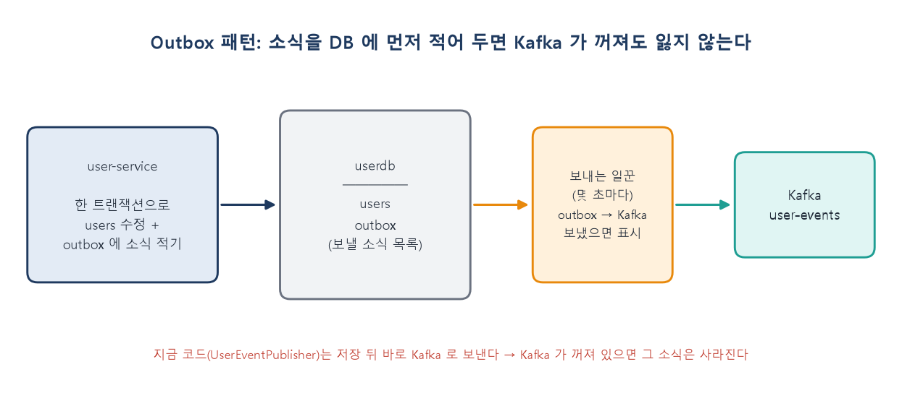

7장. 정리와 더 나아가기 - Outbox, 탈퇴 이벤트, Redis
학습 목표
- 심화 과정에서 더한 것을 한 장으로 정리한다.
- 6장 실험 ④의 약점을 푸는 Outbox 패턴의 생각을 안다.
- Redis 가 MSA 에서 어디에 쓰이는지 안다.
7-1. 한 장으로 다시 보기

| 질문 | 기초 과정 | 심화 과정 |
|---|---|---|
| 닉네임을 바꾸면 예전 글 작성자는? | 그대로 (복사본이 어긋남) | Kafka 소식으로 따라 바뀐다 |
| 서비스끼리 어떻게 이어지나? | 이어지지 않음 | 토픽 user-events (user-service → post-service) |
| post-service 가 꺼져 있었다면? | - | 다시 켜지면 따라잡는다 (컨슈머 그룹의 오프셋) |
| 같은 소식을 두 번 받으면? | - | 괜찮다 (writer 덮어쓰기는 멱등) |
| 두 DB 가 같아지는 시점은? | - | 잠깐 뒤 (결과적 일관성) |
| 약한 곳은? | - | 보내는 순간 Kafka 가 꺼져 있으면 소식이 사라진다 |
7-2. Outbox 패턴 - 소식을 잃지 않으려면
6장 실험 ④에서 Kafka 가 꺼져 있을 때 닉네임을 바꾸자 소식이 사라졌다. "users 저장" 은 PostgreSQL, "소식 보내기" 는 Kafka 라서 하나의 트랜잭션으로 묶을 수 없기 때문이다.

Outbox(보낼 편지함) 패턴은 이렇게 한다.
- user-service 의 DB(userdb)에
outbox테이블을 하나 만든다. (보낼 소식 목록) - 닉네임을 바꿀 때 같은 트랜잭션으로
users를 고치고outbox에 소식 한 줄을 적는다. 같은 DB 라서 둘 다 되거나 둘 다 안 된다. - 따로 도는 보내는 일꾼(예:
@Scheduled로 몇 초마다)이outbox에서 아직 안 보낸 소식을 꺼내 Kafka 로 보내고, 보냈으면 "보냄" 으로 표시한다. - Kafka 가 꺼져 있으면 일꾼이 계속 실패하지만, 소식은
outbox에 남아 있다. Kafka 가 돌아오면 그때 보낸다.
일꾼이 "보냈다" 표시를 하기 직전에 죽으면 같은 소식을 두 번 보낼 수 있다. 그래서 받는 쪽의 멱등성(4장)이 함께 필요하다. 실무에서는 DB 의 변경 기록을 읽어 Kafka 로 보내 주는 Debezium 같은 도구로 일꾼을 대신하기도 한다.
7-3. 다음 소식 - 회원 탈퇴
기초 5장에서 "회원이 탈퇴해도 DB 가 글을 함께 지워 주지 않는다(ON DELETE CASCADE 를 쓸 수 없다)" 고 했다. 이제 같은 방법으로 풀 수 있다.
| 단계 | 어디서 | 무엇을 |
|---|---|---|
| 1 | user-service | DELETE /api/auth/me → users 에서 삭제 |
| 2 | user-service | {"type":"USER_DELETED","userId":1} 소식 보내기 (같은 토픽) |
| 3 | post-service | UserEventListener 에서 type 이 USER_DELETED 면 그 회원 글 삭제 (또는 작성자를 "탈퇴한 회원" 으로) |
UserEvent 에 type 칸을 둔 덕분에 토픽도, 리스너도 새로 만들 필요 없이 if 하나만 더하면 된다. (도전 과제 1)
7-4. Redis 는 어디에 쓰나
Kafka 가 "서비스 사이에 소식을 전하는" 도구라면, Redis 는 "아주 빠르게 잠깐 기억하는" 메모리 저장소다. 주 DB(PostgreSQL)를 대신하지는 않는다. 이 게시판에 넣는다면 이런 곳이다.
| 쓰임 | 어디에 | 하는 일 |
|---|---|---|
| 로그아웃한 토큰 거부 | api-gateway | JWT 는 서버가 취소할 수 없다. 로그아웃(또는 닉네임 변경)한 토큰을 만료 시각까지 Redis 에 적어 두고, AuthFilter 가 그 목록에 있으면 401 로 막는다. 6장 실험 ③의 "옛 토큰" 문제도 이렇게 막을 수 있다 |
| 요청 수 제한 | api-gateway | "1초에 10번까지" 처럼 막기. Spring Cloud Gateway 의 RequestRateLimiter 가 Redis 에 횟수를 센다. 게이트웨이를 여러 대 띄워도 횟수를 함께 센다 |
| 캐시 | post-service | 자주 읽는 글 목록을 Redis 에 잠깐 담아 두고 DB 를 덜 읽는다. 글이 바뀌면 지운다 |
| 분산 락 | 여러 서비스 | 같은 일을 두 서버가 동시에 하지 않게 잠금 |
[MSA 개념] 도구는 문제가 생길 때 들인다
기초 과정에는 Kafka 도 Redis 도 없었다. 복사본을 맞춰야 하는 문제(닉네임 변경)가 생기자 Kafka 를 들였다. Redis 도 "옛 토큰을 막아야 한다", "요청이 너무 많다" 같은 문제가 실제로 생길 때 들이면 된다. 도구가 늘수록 켜고, 지켜보고, 고장을 고칠 대상도 늘어난다.
7-5. Saga - 여러 서비스에 걸친 작업
"주문 → 결제 → 재고 차감" 처럼 여러 서비스를 거쳐야 하는 일은 하나의 트랜잭션으로 묶을 수 없다. Saga 패턴은 각 서비스가 자기 일을 하고 이벤트로 다음 서비스에 넘기며, 중간에 실패하면 앞에서 한 일을 되돌리는 이벤트(결제 취소, 주문 취소)를 보내 맞춘다. 이 과정의 닉네임 변경은 한 방향 소식이라 Saga 가 필요 없지만, 큰 서비스에서 MSA 를 할 때 가장 신중하게 설계하는 부분이다.
7-6. 도전 과제
- 회원 탈퇴 이벤트 - 7-3 의 표대로
DELETE /api/auth/me와USER_DELETED소식을 만들어 보자. post-service 는 그 회원 글을 지운다. React 의 내 정보 화면에 "탈퇴" 단추도 더해 보자. - Outbox 맛보기 - user-service 에
outbox테이블(Entity)과@Scheduled일꾼을 만들어, 6장 실험 ④를 다시 해 보자. Kafka 를 다시 켜면카프카없음소식이 뒤늦게 도착하는지 확인한다. (힌트: 메인 클래스에@EnableScheduling) - 두 번째 듣는 쪽 - 새 컨슈머 그룹(
group-id: audit)으로user-events를 듣고 콘솔에 "닉네임 변경 기록" 만 찍는 작은 리스너를 post-service 에 하나 더 만들어 보자. 같은 소식을 두 그룹이 따로 읽는 것을 확인한다. - 파티션 늘리기 - 아래 명령으로
user-events의 파티션을 3개로 늘리고, 여러 회원의 닉네임을 바꿔 보자. 같은 회원의 소식은 늘 같은 파티션에 들어가는지 두 번째 명령(맨 앞에 파티션 번호가 찍힌다)으로 확인한다. (파티션은 늘릴 수만 있고 줄일 수는 없다. 되돌리려면advanced폴더에서docker compose down -v로 Kafka 를 새로 만든다. 이때 심화 DB 의 데이터도 함께 지워진다)
# user-events 토픽의 파티션을 3개로 늘린다 (늘리기만 되고 줄일 수는 없다)
docker exec mas-adv-kafka /opt/kafka/bin/kafka-topics.sh --bootstrap-server localhost:9092 --alter --topic user-events --partitions 3
# 메시지마다 몇 번 파티션에 들어갔는지(print.partition)와 키를 함께 찍는다
docker exec mas-adv-kafka /opt/kafka/bin/kafka-console-consumer.sh --bootstrap-server localhost:9092 --topic user-events --from-beginning --formatter-property print.partition=true --formatter-property print.key=true --timeout-ms 5000
정리
- 심화 과정은 이벤트로 복사본을 맞추는 방법과 그 장단점을 직접 겪어 보는 과정이었다.
- 보내는 순간의 장애는 Outbox 패턴으로, 같은 소식을 두 번 받는 문제는 멱등성으로 푼다.
- Redis 는 토큰 거부 · 요청 수 제한 · 캐시처럼 "빠르게 잠깐 기억하는" 일에 쓴다.
- 도구는 실제로 문제가 생길 때 하나씩 들인다.
확인 문제
- Outbox 패턴에서
users수정과outbox기록을 같은 트랜잭션으로 묶을 수 있는 이유는? - Outbox 패턴을 써도 받는 쪽의 멱등성이 필요한 이유는?
- 회원 탈퇴 소식을 만들 때 새 토픽을 만들지 않아도 되는 이유는?
- 로그아웃한 JWT 를 막는 데 Redis 가 쓰이는 이유는?